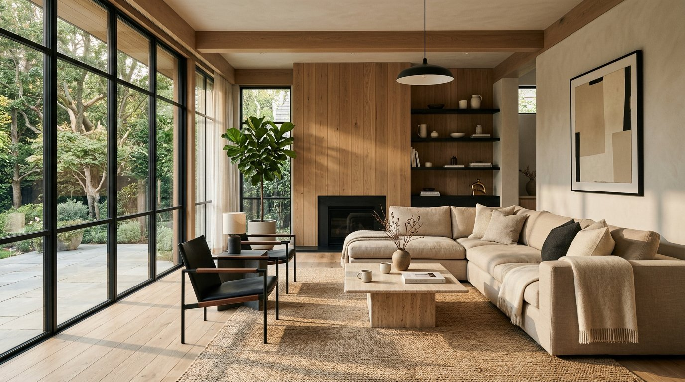
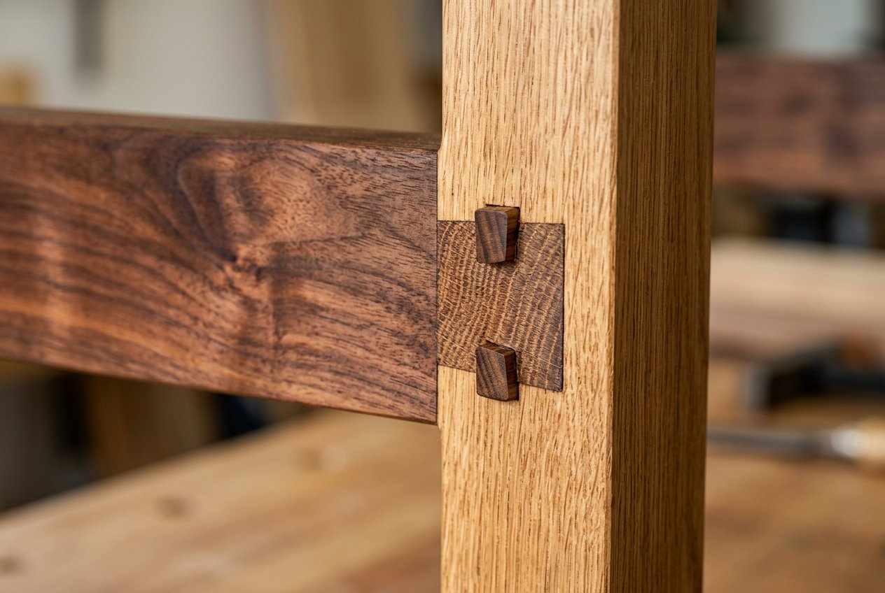

How to plan a kitchen that works every day
The five zones that decide whether your kitchen is a joy or a bottleneck — and how to test them before you build.
Featured edition
One featured read, front and centre — then the full archive below.
The five zones that decide whether your kitchen is a joy or a bottleneck — and how to test them before you build.
Read the articleThe archive
The five zones that decide whether your kitchen is a joy or a bottleneck — and how to test them before you build.

An honest guide to the three cabinetry families — how they age, what they cost, and which rooms they love.

No mystique, no obligation — a walkthrough of our first ninety minutes together and what you leave with.

Ambient, task and accent: how to layer light so a room flatters people, food and evenings.

Full-height joinery, borrowed light and one brave colour — how we make 900 sq.ft live like 1,400.

Acoustics, daylight and choice — the three things knowledge workers actually rank above table football.

The 60-30-10 of materials, why we sample in the room's own light, and the patina test.

Weeks, not vibes: the honest phasing of a residential or fit-out project — and where delays actually come from.

Re-oiling, honest cleaning and the three things that void warranties — from the person who signs ours.